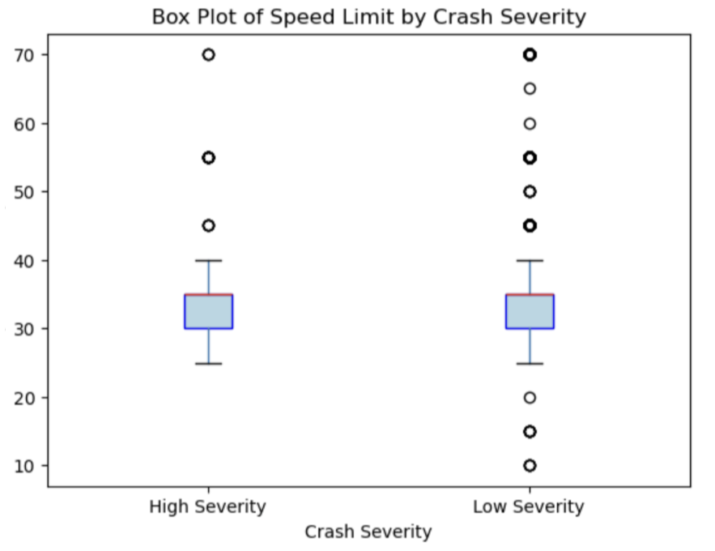
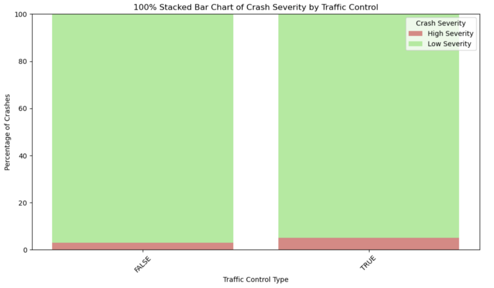

Overview
This page expands on the main results from the project and explains how roadway design relates to crash severity in Detroit. The findings focus on lane count, traffic control, and posted speed limits.
Lanes vs. Severity
Serious and fatal crashes occurred on roads with more lanes on average, showing that wider roadways were associated with higher crash severity. This suggests that multi-lane corridors may create more conflict points and greater crash impact when collisions occur.
The lane-based result was one of the clearest patterns in the analysis. Roads with higher lane counts appeared more often in the severe crash group, which supports the idea that roadway width is an important factor in injury outcomes.
Traffic Control Findings
Crashes at locations with traffic control features such as signals or stop signs showed a slightly higher proportion of severe outcomes. This may reflect the complexity of larger intersections, where turning movements, merging, and decision points can increase crash risk.

Although traffic control is usually intended to improve safety, the results show that controlled intersections can still produce serious crashes when traffic volume and roadway geometry create difficult conditions.
Speed Limit Results
Posted speed limits did not show a strong or meaningful relationship with crash severity. Both high-severity and low-severity crashes had similar speed-limit distributions, which suggests that speed limit alone does not explain the injury pattern in Detroit.

This result is important because it shifts attention away from signage alone and toward the physical design of the road itself. In other words, lane count and intersection structure appear more closely tied to severity than posted speed limits.
Interpretation
Together, these findings show that Detroit’s most dangerous crashes are shaped by roadway design rather than just by speed postings. Wider streets and complex intersections are more strongly associated with severe injury outcomes, while speed limits by themselves do not appear to explain the pattern.
This connects directly to the High Injury Network, where serious crashes are concentrated on a small number of major corridors. The results support targeted safety improvements on the city’s most dangerous roads and intersections.
Key Takeaway
The analysis suggests that Detroit’s severe crash risk is not evenly spread across the city. Instead, it is concentrated in roadway environments that combine higher lane counts, heavier traffic, and complicated intersection design.